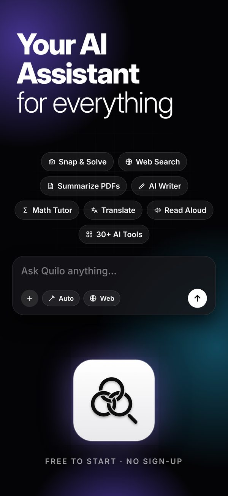
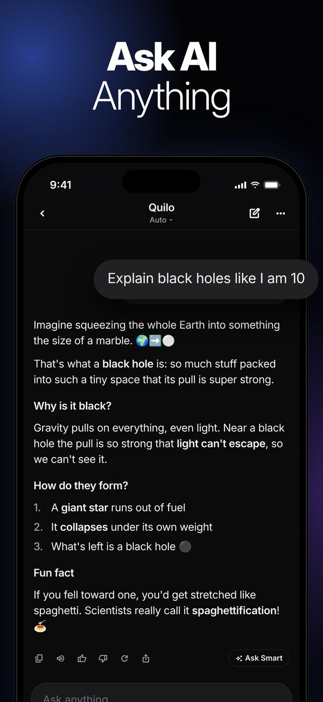
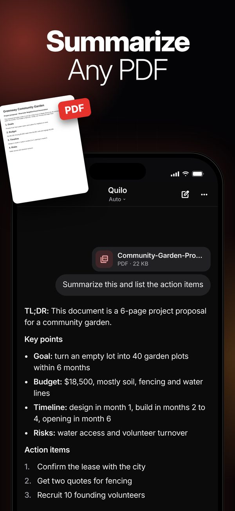

Ask anything.
Get the best answer.
Quilo is an AI chat assistant for iPhone. Snap a photo, drop in a PDF, search the web or create an image, and Quilo picks the right AI model for every question.
Free to try. Quilo Pro unlocks more.


One app for every question
Quilo brings several leading AI models into one simple, private chat app.
Auto mode
Quilo reads your question and sends it to the model that answers it best, fast for quick chats and stronger for hard problems.
Snap and solve
Take a photo of homework, a sign, a menu or a plant and ask about it.
Summarize PDFs
Drop in a document and get the key points, or ask questions about it.
Web search
Answers about today, with links to the sources.
Create and edit images
Describe an image and Quilo makes it, or change a photo with a sentence.
Write anything
Emails, messages, essays, captions and more, in the tone you want.
Works offline
On supported iPhones, Quilo can answer with Apple's on-device model, with no internet needed.
Private by design
No account needed. Your chat history stays on your iPhone.
Quilo Pro
Use Quilo free every day, or go Pro for the most capable models, more photos and documents, and image creation.
Weekly
Starts with a 3-day free trial.
Monthly
Billed every month.
Yearly
Best value.
US prices shown. Prices in other countries are set by the App Store and shown in the app before you buy. Subscriptions renew automatically unless you cancel at least 24 hours before the end of the current period. Manage or cancel any time in your Apple Account settings. See the Terms of Use and Privacy Policy.